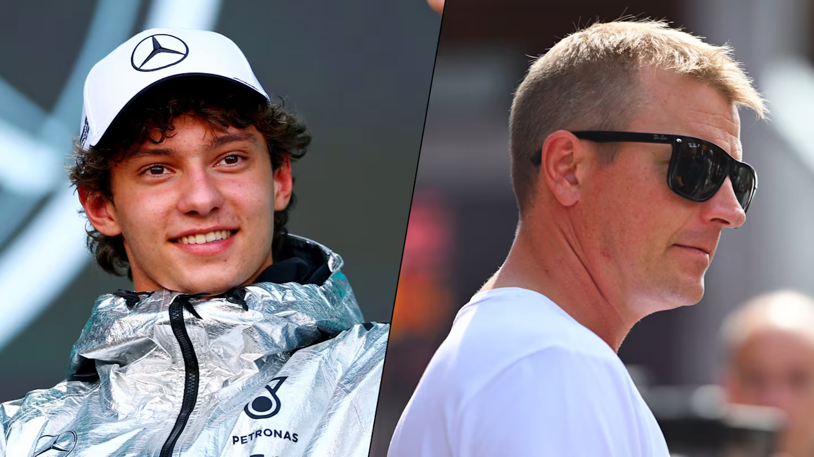
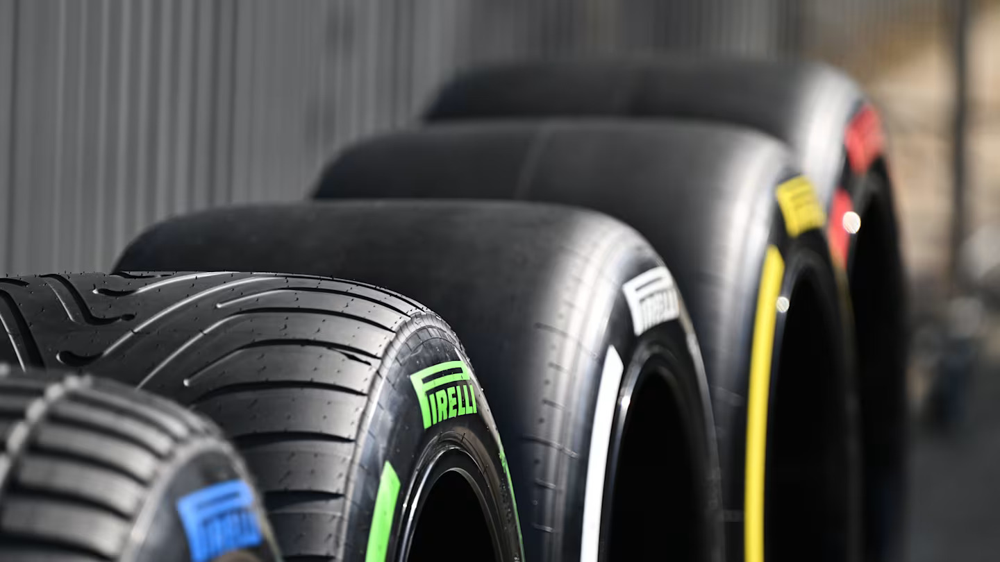
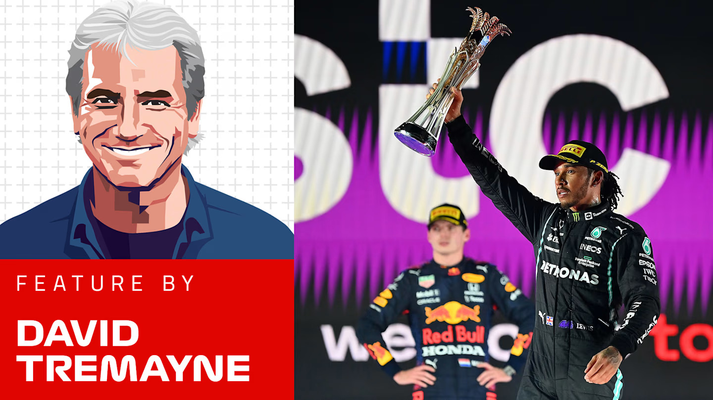
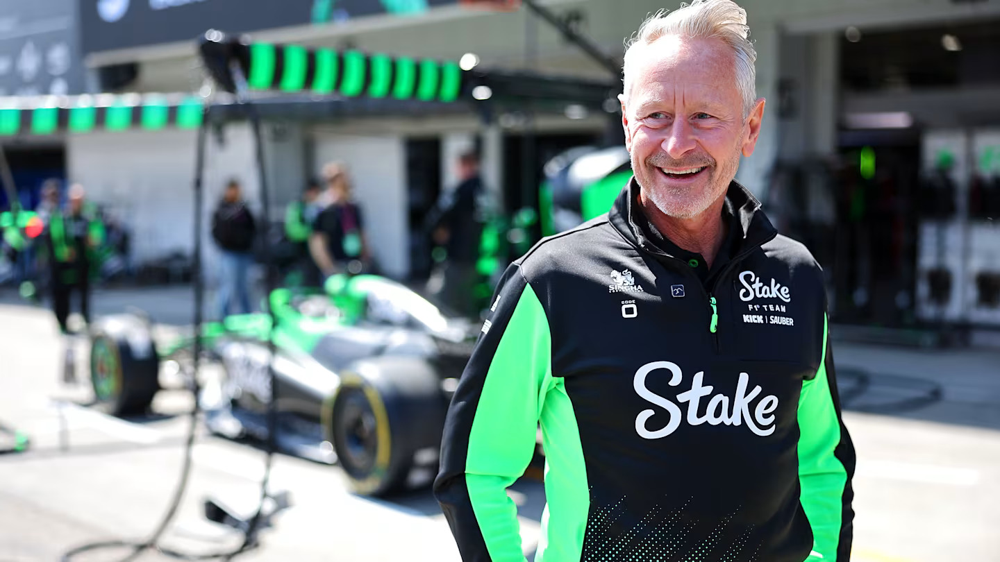
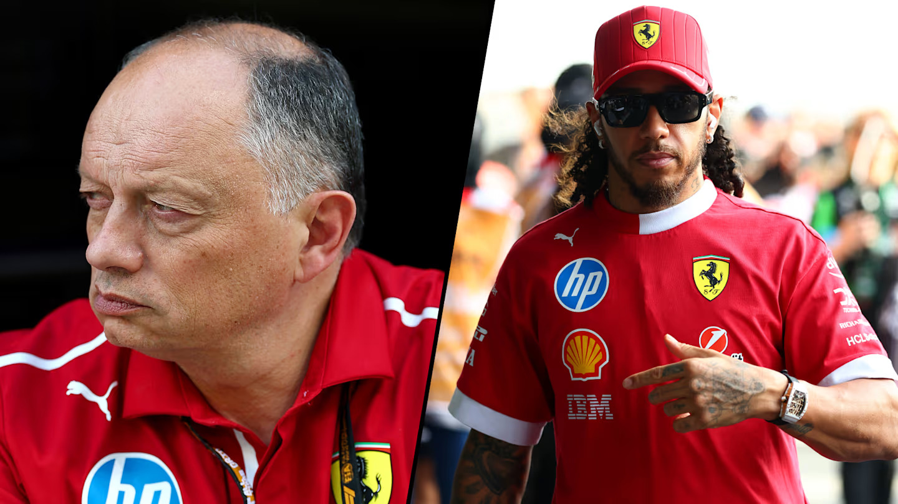
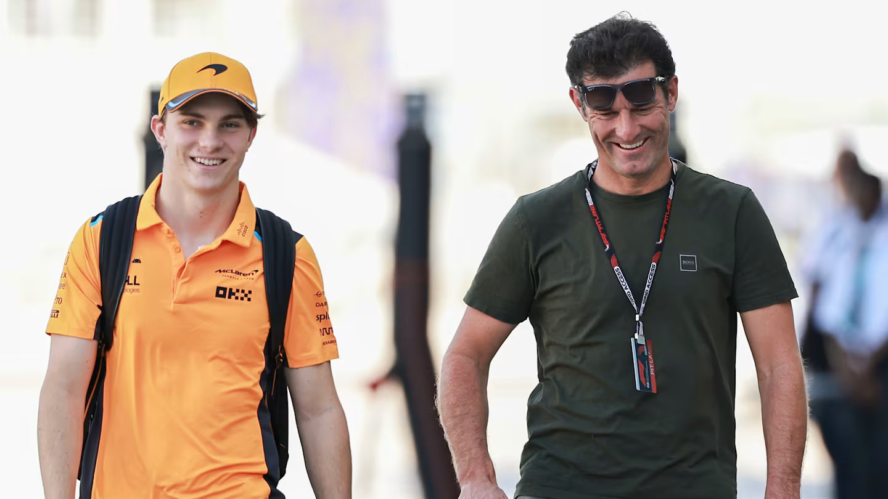

Kimi Antonelli non è l'unica persona con il suo primo nome ad aver avuto successo in Formula 1 e,
a distanza di diversi anni dall'"altro" Kimi che gareggia in questo sport, il giovane ha
rivelato cosa è successo quando ha incontrato il suo famoso omonimo, Kimi Raikkonen.

Mentre le gamme di gomme portate in ciascuna delle prime quattro gare sono rimaste le stesse
dell'anno scorso, questo fine settimana Pirelli ha optato per una mescola più morbida, il che
significa che la C3 fungerà da dura, la C4 da media e la C5 da morbida.

A volte un nuovo Gran Premio arriva nel calendario della F1 e lascia immediatamente il segno. Il
primo GP dell'Arabia Saudita è stato uno di questi, catturando l'attenzione fin dall'inizio e
non lasciandola più andare.

Wheatley promette di guidare Kick Sauber "a modo mio" mentre spiega la sfida prima dell'arrivo di
Audi

Fred Vasseur ha suggerito che la Ferrari dovrebbe "mantenere la calma" sui livelli delle proprie
prestazioni dopo le alterne fortune del weekend del Gran Premio del Bahrain, con il francese che
ha anche ammesso di aver "apprezzato" la frustrazione di Lewis Hamilton verso se stesso dopo le
qualifiche di sabato.

Il manager di Piastri, Mark Webber, rivela come l'Australian abbia reagito alla "seria
artiglieria" dei suoi avversari nel 2025